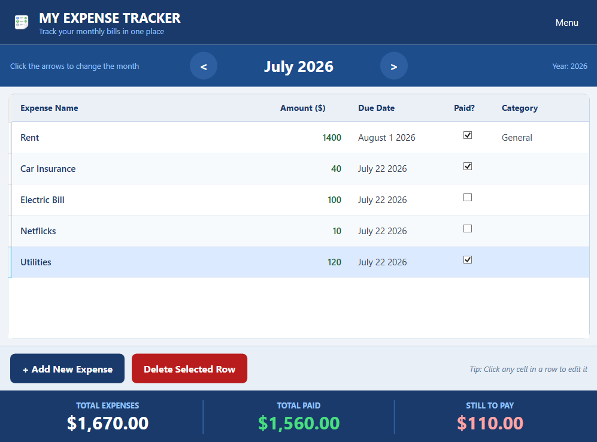

Move between months easily
Simple arrow buttons let you go to the previous or next month in one click.
A simple and friendly way to track household bills month by month. Add expenses, check them off as paid, and instantly see what is done and what is still left to pay.
What it does
The app focuses on one job: helping you stay on top of bills without spreadsheets or complicated setup.
Simple arrow buttons let you go to the previous or next month in one click.
Click once to add a new row, then enter bill name, amount, due date, and category directly in the table.
Check a single box when you pay a bill. The status updates immediately.
A summary panel always shows Total Expenses, Total Paid, and Still To Pay.
Create a new year file or reopen any previous year from the menu.
Everything is saved as local JSON files in AppData on your computer.
How it works
Open the month you want to manage.
Enter each bill with amount, date, and category.
Tick the checkbox as each bill is paid.
See what is paid and what remains to pay at a glance.
Screenshot

Add your screenshot to expense-tracker/img/app.png and it will appear here automatically.